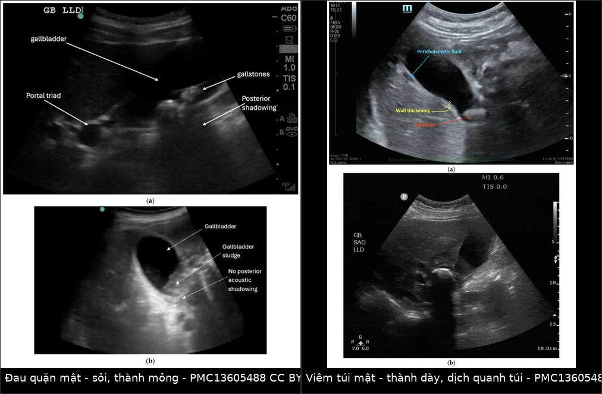
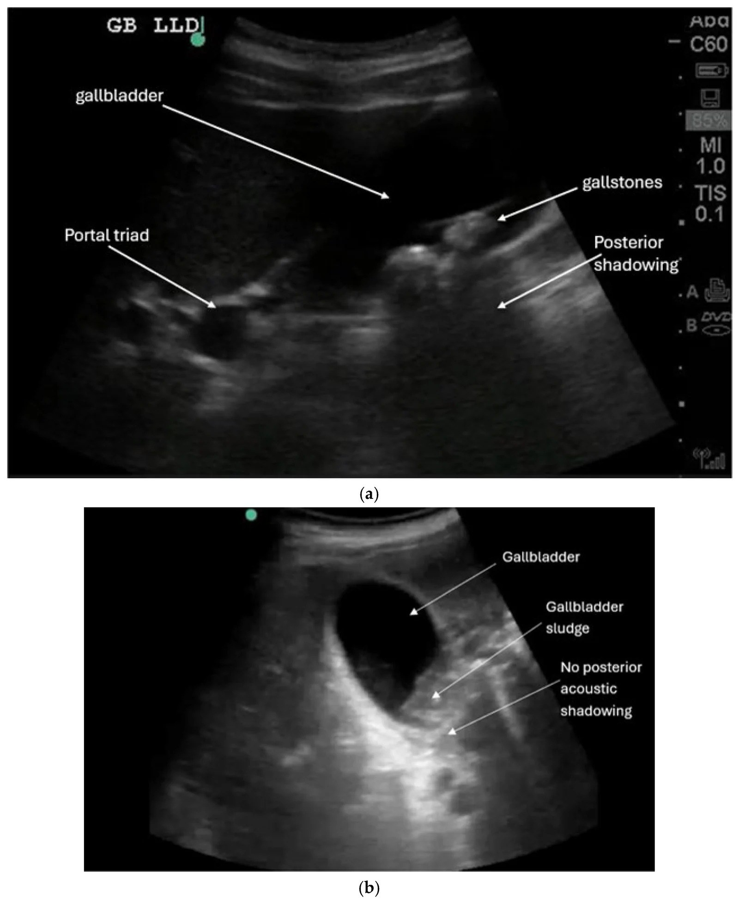
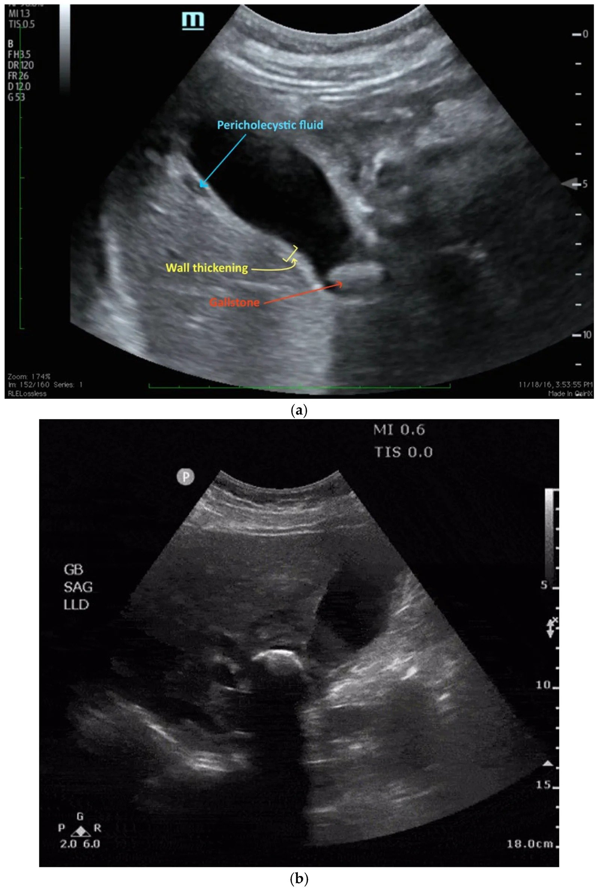

1930 — Sỏi mật không biến chứng ở thai phụ: ai thực sự chờ được tới sau sinh — sludge 31%, tái phát 77%, SAGES 2024 để ngỏ quý III / Uncomplicated gallstones and biliary colic in pregnancy
Tags: pattern:soi pattern:tac-nghen pattern:daubung-cap pattern:o-dich vung:tui-mat vung:thai-nhi protocol:sieu-am-bung protocol:MRI-khong-can-tu
Mức chắc chắn (certainty): tổng hợp y văn (literature synthesis) — ghép hướng dẫn SAGES 2024 về nội soi trong thai (PMID 38700549, Surg Endosc, PMC11133165), AGA 2024 về bệnh tiêu hóa–gan mật trong thai (PMID 39140906, Gastroenterology), đoàn hệ 272 thai phụ theo dõi siêu âm (Ann Intern Med 1993, PMID 8512160), đoàn hệ 3.070 thai phụ (PMID 24443325, JPEN 2015), đoàn hệ 228 thai phụ bệnh túi mật (PMC12226680, Langenbecks Arch Surg 2025 — chỉ dùng số liệu), nghiên cứu 112 thai phụ (PMID 22732875, Gastrointest Endosc 2012), tổng quan chẩn đoán hình ảnh đau quặn mật (PMID 16691173, J Radiol 2006), đồng thuận giảm đau trong thai (PMC8613155, Schmerz 2021), ca lâm sàng có siêu âm/MRCP (PMC10800094, Cureus 2023) và bộ ảnh siêu âm đường mật cấp (Ummadi S et al., Diagnostics 2026, PMC13605488, CC BY 4.0). Số nào nguồn không nêu ghi "chưa rõ".
Câu chốt: đa số thai phụ có sỏi mật chỉ đau quặn mật — không sốt, không tăng bạch cầu, thành túi mật ≤ 3 mm, không dịch quanh túi, ống mật chủ ≤ 6 mm. Nhóm này có thể theo dõi, nhưng "chờ sau sinh" không miễn phí: 77% tái phát triệu chứng khi điều trị bảo tồn (PMC12226680), và SAGES 2024 chỉ để ngỏ lựa chọn mổ hay không ở quý III với bệnh mật không phải viêm túi mật cấp — nghĩa là quyết định phải dựa trên tiêu chí cụ thể, không dựa vào câu "đợi sinh xong". Khi đã có biến chứng, bài toán chuyển sang 1925 — viêm túi mật cấp.
1. Tổng quan bệnh học – cơ chế hình ảnh
1.1 Vì sao thai phụ hình thành sỏi/bùn mật (TẠI SAO)
- Hai hormone, hai bước:
- Estrogen làm gan tăng bài xuất cholesterol vào mật → mật quá bão hòa cholesterol;
- Progesterone làm giảm co bóp túi mật và giãn cơ vòng Oddi → ứ trệ mật.
- Kết hợp: bùn mật (sludge) hình thành trước, rồi kết tinh thành sỏi cholesterol. Đây là lý do bệnh mật là nguyên nhân nhập viện không sản khoa hàng đầu ở thai phụ.
- Tần suất thật (đoàn hệ 272 thai phụ, siêu âm lặp lại): bùn mật mới 31% (25–37%), sỏi mới 2% (0,2–4%) từ quý I đến ngay sau sinh; 28% thai phụ có cơn đau mật, và đau chỉ gắn với sự hiện diện của sỏi, không gắn với bùn đơn thuần (PMID 8512160).
- Vì sao số liệu "mới mắc" dao động 10–31%: đoàn hệ 3.070 thai phụ ghi 10,2% mới có bùn/sỏi hoặc tiến triển đến 4–6 tuần sau sinh (PMID 24443325), thấp hơn 31% của đoàn hệ 1993. Khác biệt đến từ định nghĩa (bùn vs sỏi), số lần chụp và thời điểm chụp — đọc số phải kèm định nghĩa, không so trực tiếp.
- Vì sao bùn khác sỏi về tiên lượng: bùn là tinh thể cholesterol + mucin, không tạo bóng lưng; sau sinh 61% bùn biến mất (theo dõi trung bình 5 tháng) trong khi chỉ 28% sỏi biến mất (theo dõi 9,7 tháng) (PMID 8512160). Vì vậy bùn không triệu chứng không phải chỉ định mổ.
- Vì sao đau quặn mật lại đau: sỏi tạm thời kẹt cổ túi mật → túi mật căng → kích thích tạng → đau thượng vị/hạ sườn phải, khởi phát đột ngột, khu trú và liên tục, rồi giảm dần trong 2–4 giờ (PMID 16691173). Chữ "quặn" (colic) là tên gọi sai — đau không từng cơn sóng như đau ruột.
- Vì sao không sốt, không tăng bạch cầu: sỏi rơi khỏi cổ túi → không viêm thành túi; niêm mạc không tổn thương → không đáp ứng viêm hệ thống. Khi sỏi kẹt lại, thành túi thiếu máu → viêm túi mật (bài 1925), lúc đó mới có sốt, Murphy, thành dày > 3 mm, dịch quanh túi.
- Vật lý siêu âm — vì sao thấy được:
- Sỏi: bề mặt phản xạ mạnh → echo dày + bóng lưng (posterior acoustic shadowing) do sóng bị phản xạ và hấp thụ gần như hoàn toàn; sỏi cholesterol nhỏ có thể không có bóng (như Hình 2b của bài: bùn không bóng).
- Bùn: hạt lơ lửng nhỏ → echo mức thấp, không bóng, có thể di động theo tư thế (không tạo khối cố định).
- Thành túi mật: đo vuông góc với thành trước, đơn vị mm; > 3 mm là bất thường (ngưỡng dùng chung, đã nêu ở bài 1925).
- Dịch quanh túi mật: khoang echo trống giữa thành túi và gan — dấu hiệu viêm, không có trong đau quặn mật đơn thuần.
1.2 Ngưỡng định lượng nằm lòng
| Đại lượng | Ngưỡng / con số | Ý nghĩa | Nguồn |
|---|---|---|---|
| Bùn mật mới trong thai | 31% (25–37%) | Rất thường gặp, phần lớn không triệu chứng | PMID 8512160 |
| Sỏi mới trong thai | 2% (0,2–4%) | Ít hơn bùn nhưng gây đau | PMID 8512160 |
| Thai phụ có cơn đau mật | 28% | Chỉ gắn với sỏi, không với bùn | PMID 8512160 |
| Bùn biến mất sau sinh | 61% (theo dõi ~5 tháng) | Không mổ bùn không triệu chứng | PMID 8512160 |
| Sỏi biến mất sau sinh | 28% (theo dõi ~9,7 tháng) | Sỏi có thể tồn tại → cần kế hoạch | PMID 8512160 |
| Thời gian cơn đau quặn mật | 2–4 giờ, khởi phát đột ngột, giảm dần | Phân biệt với cơn co tử cung/đau ruột | PMID 16691173 |
| Thành túi mật | ≤ 3 mm bình thường; > 3 mm bất thường | Ngưỡng chính trên siêu âm | bài 1925 |
| Ống mật chủ | ≤ 6 mm ở người chưa cắt túi mật; ≤ 10 mm sau cắt túi mật | Tránh gọi giãn oan | thực hành chuẩn |
| Tái phát triệu chứng khi bảo tồn | 77% (trong 220 ca bảo tồn của đoàn hệ 228 thai phụ) | "Chờ sau sinh" = chờ tái phát | PMC12226680 |
| SAGES 2024 — quý III, bệnh mật khác viêm túi mật cấp | Mổ hoặc không mổ đều được chấp nhận (ý kiến chuyên gia, không có bằng chứng mạnh) | Quyết định cá thể hóa | PMID 38700549 |
| AGA 2024 — thủ thuật không cấp cứu | Hoãn sau sinh; nếu cần → quý II; cắt túi mật nội soi an toàn mọi quý, chuẩn là nội soi | Khung thời điểm | PMID 39140906 |
2. Mẫu hình + chẩn đoán phân biệt theo vị trí (gamut)
Câu hỏi thực hành: thai phụ đau thượng vị/hạ sườn phải — bệnh túi mật, ống mật, tụy, gan, ruột thừa, thận, phổi hay tử cung?
- Đau quặn mật (biliary colic): đau thượng vị nhiều hơn hạ sườn phải, đột ngột, 2–4 giờ, có thể lan vai phải/lưng; không sốt; siêu âm sỏi ± bùn, thành mỏng, không dịch quanh túi.
- Viêm túi mật cấp (bài 1925): đau > 6 giờ, sốt, Murphy dương, thành > 3 mm + dịch quanh túi + sỏi kẹt cổ.
- Sỏi ống mật chủ / viêm đường mật (bài 1929): đau + vàng da + sốt/rét run; bilirubin ≥ 2 mg/dL, ống mật chủ giãn; cần MRCP/ERCP, không phải chỉ cắt túi mật.
- Viêm tụy do sỏi: đau thượng vị lan sau lưng + nôn; lipase > 3 lần giới hạn trên; siêu âm có sỏi, có thể không thấy sỏi OMC.
- Gan nhiễm mỡ cấp do thai (AFLP): quý III, vàng da + hạ đường huyết + rối loạn đông máu + bạch cầu tăng, hôn mê gan; không phải bệnh mật, cấp cứu sản khoa.
- HELLP/preeclampsia: tăng huyết áp + protein niệu + tiểu cầu giảm + men gan tăng + đau hạ sườn phải; có thể giả viêm túi mật, nhưng xử trí là đình chỉ thai, không mổ mật.
- Viêm ruột thừa (bài 1817): đau hố chậu phải/thượng vị do tử cung đẩy ruột thừa lên; siêu âm/MRI, không phải siêu âm túi mật.
- Sỏi niệu (bài 1818): đau hông lưng + tiểu máu; ứ nước thận trên siêu âm.
- Nguyên nhân ngoài ổ bụng: viêm phổi đáy phải (sốt, ho, đông đặc), thuyên tắc phổi (khó thở, đau màng phổi), nhồi máu cơ tim dưới (đau thượng vị + thay đổi ECG) — luôn là hàng phân biệt ở thai phụ đau thượng vị.
- Cơn co tử cung/nhau bong non: đau theo cơn, tử cung cứng, ra máu âm đạo; không liên quan bữa ăn.
Mnemonic "BILIARY": Biliary colic, Inflammation (cholecystitis), Lithiasis CBD, Inflamed pancreas, AFLP, Right lower lobe pneumonia/PE, Young pregnancy (HELLP, abruption).
3. Bảng so sánh phân biệt (ma trận đối chiếu)
| Thực thể (entity) | Hình ảnh điển hình | Chốt vào (rule-in) | Chốt loại (rule-out) | Gợi ý xác nhận |
|---|---|---|---|---|
| Đau quặn mật (sỏi không biến chứng) | Sỏi echo dày + bóng lưng; thành ≤ 3 mm; không dịch quanh túi; bùn không bóng | Sỏi + thành mỏng + không dịch quanh túi + hết đau trong 2–4 giờ | Sốt/Murphy/thành > 3 mm/dịch quanh túi → không còn đơn thuần | Siêu âm; CBC/CRP/lipase bình thường |
| Viêm túi mật cấp (1925) | Thành > 3 mm, dịch quanh túi, sỏi kẹt cổ, túi căng, Murphy siêu âm | Sốt + Murphy + thành dày + dịch quanh túi | Thành mỏng, không dịch, đau tự hết → quặn mật | Siêu âm; CBC/CRP; TG18 nếu nặng |
| Sỏi OMC/viêm đường mật (1929) | OMC giãn > 6 mm, sỏi trong lòng ống, giãn đường mật trong gan | Vàng da + bilirubin ≥ 2 mg/dL + OMC giãn | Bilirubin bình thường, OMC ≤ 6 mm → ít khả năng tắc | MRCP không cản từ; ERCP khi có chỉ định giải áp |
| Viêm tụy do sỏi | Tụy phù, dịch quanh tụy; sỏi túi mật ± OMC | Lipase > 3× giới hạn trên + đau lan sau lưng | Lipase bình thường → không phải viêm tụy | Lipase; MRCP nếu nghi tắc; ERCP khi tắc/viêm đường mật |
| AFLP | Gan giảm đậm độ lan tỏa trên CT (nếu chụp), không sỏi | Quý III + vàng da + hạ đường huyết + INR tăng + bạch cầu tăng | Sỏi + túi mật viêm khu trú → không phải AFLP | Xét nghiệm gan–đông máu–glucose; cấp cứu sản khoa |
| HELLP/preeclampsia | Gan có thể nhồi máu/tụ máu dưới bao, không sỏi | HA cao + protein niệu + tiểu cầu giảm + LDH tăng | Không tăng HA/protein niệu → ít khả năng | Xét nghiệm sản khoa; theo dõi thai |
| Viêm ruột thừa (1817) | Ruột thừa > 7 mm, không đè xẹp, mỡ quanh viêm | Đau hố chậu phải + ruột thừa > 7 mm | Ruột thừa bình thường → loại trừ | Siêu âm; MRI không cản từ |

Trái: sỏi echo dày + bóng lưng, thành mỏng, không dịch quanh túi (đau quặn mật). Phải: thành dày + dịch quanh túi + sỏi kẹt cổ (viêm túi mật cấp). Nguồn: Ummadi S et al., Diagnostics 2026 (PMC13605488), Fig. 2–3, CC BY 4.0; ảnh ghép letterbox bằngtools/make_composite.py, không crop.
4. Protocol chụp + tiêu chí "ai chờ được"
4.1 Protocol siêu âm (bước 1, không tia xạ)
- Tư thế: nằm ngửa + nghiêng trái để mật dồn về phía thành bụng; quét dưới sườn phải và liên sườn (thai lớn che kín → phải nâng đầu dò lên cao).
- Đo và ghi: số lượng/kích thước sỏi (mm), có bóng lưng hay không, bùn, thành túi mật (mm) tại thành trước, dịch quanh túi, đường kính ống mật chủ (mm), dấu Murphy siêu âm.
- Không cần nhịn ăn trong cơn cấp; nhịn ăn 6–8 giờ chỉ giúp đánh giá túi mật căng/giãn tốt hơn khi chụp theo chương trình.
- MRI/MRCP không cản từ khi nghi sỏi OMC hoặc siêu âm không kết luận: MRCP cho bản đồ đường mật không tia xạ; không dùng gadolinium trong thai. Siêu âm Se 73%/Sp 91% cho sỏi OMC, MRCP > 90% (tổng hợp ở bài 1796).
- ERCP chỉ khi viêm đường mật/tắc mật có chỉ định giải áp, không dùng để "chẩn đoán cho chắc" trong đau quặn mật đơn thuần (AGA 2024; bài 1929).
4.2 Tiêu chí theo dõi được (tổng hợp thực hành — chưa có thang điểm được kiểm chứng)
Có thể chờ (theo dõi + hẹn mổ sau sinh) khi HỘI ĐỦ:
- Đau điển hình tự hết trong ≤ 6 giờ, không sốt, không rét run;
- Không vàng da, bilirubin/ALP/ALT/AST bình thường, lipase bình thường;
- Siêu âm: thành ≤ 3 mm, không dịch quanh túi, OMC ≤ 6 mm, không sỏi OMC;
- Không có biến chứng (viêm túi mật, viêm đường mật, viêm tụy, thủng);
- Thai và mẹ ổn định, bệnh nhân về được đúng hẹn và hiểu dấu hiệu phải quay lại;
- Quý III + gần ngày sinh: SAGES 2024 cho phép mổ hoặc không mổ với bệnh mật không phải viêm túi mật cấp — có thể chờ sau sinh nếu đủ 5 điều trên.
Không nên chờ (chuyển cắt túi mật nội soi) khi có BẤT KỲ:
- Tái phát nhiều lần hoặc đau kéo dài, không giảm;
- Biến chứng (viêm túi mật, viêm tụy, viêm đường mật, sỏi OMC);
- Quý I–II — cửa sổ thuận lợi, đặc biệt khi đã có cơn tái diễn;
- Không tiếp cận được y tế hoặc không tái khám được;
- Bệnh nhân muốn mổ sau khi được tư vấn đầy đủ (SAGES 2024: cắt nội soi được ưu tiên hơn điều trị bảo tồn — khuyến cáo có điều kiện).
4.3 Giảm đau và điều trị nội khoa
- Bậc 1: paracetamol — an toàn nhất mọi quý.
- NSAID (ibuprofen/diclofenac): tránh từ 20 tuần (nguy cơ thiểu ối, suy thận thai, đóng sớm ống động mạch); nếu dùng thì liều thấp, thời gian ngắn theo đồng thuận chuyên gia (PMC8613155).
- Opioid (morphine): dùng ngắn hạn khi đau mạnh; tránh codeine (biến thể CYP2D6 tăng chuyển hóa → ức chế hô hấp thai nhi).
- Chống nôn: metoclopramide/ondansetron theo chỉ định; không dùng NSAID + opioid kéo dài.
- Ursodeoxycholic acid: không dùng cho sỏi mật không biến chứng; chỉ định ở ứ mật trong thai (AGA 2024: acid mật > 10 µmol/L + ngứa, liều 10–15 mg/kg/ngày).
- Chế độ ăn: tránh bữa ăn nhiều mỡ, khối lượng lớn (giảm kích thích co bóp); không có bằng chứng ăn ít mỡ phòng được cơn.
flowchart TD
A[Thai phụ đau thượng vị hoặc hạ sườn phải] --> B[Siêu âm túi mật + xét nghiệm máu]
B --> C{Có sốt, vàng da, thành dày > 3 mm, dịch quanh túi hoặc lipase tăng?}
C -->|Có| D[Biến chứng: đi theo 1925 hoặc 1929, cắt nội soi hoặc ERCP]
C -->|Không| E{Sỏi có triệu chứng tái diễn?}
E -->|Không| F[Theo dõi, tư vấn dấu hiệu quay lại]
E -->|Có| G{Quý III và gần ngày sinh?}
G -->|Không| H[Cắt túi mật nội soi, ưu tiên quý II]
G -->|Có| I[Thảo luận: mổ ngay hoặc chờ sau sinh nếu đủ tiêu chí]
I --> J[Kế hoạch sinh + mổ sau sinh, hẹn tái khám sớm]
5. Biến thể bình thường và cạm bẫy
- Bùn mật không bóng lưng không phải sỏi: 31% thai phụ có bùn, 61% tự hết sau sinh; gọi bùn là "sỏi" dẫn tới mổ oan. Ngược lại, sỏi cholesterol nhỏ có thể không có bóng → đừng loại trừ sỏi chỉ vì thiếu bóng; xoay bệnh nhân, đổi cửa sổ, tìm echo di động.
- Thành túi mật dày không đồng nghĩa viêm túi mật: gặp trong giảm albumin, cứng gan/ascites, viêm gan cấp, suy tim phải, sau ăn; ở thai phụ còn có thành túi dày thoáng qua do ứ trệ. Luôn cần dịch quanh túi + Murphy + sốt để gọi viêm.
- OMC "giãn" sau cắt túi mật: người đã cắt túi mật có thể OMC đến 10 mm mà không tắc; đừng áp ngưỡng 6 mm cho nhóm này.
- Thai lớn che túi mật: túi mật bị đẩy lên cao, dễ bỏ sót — nâng đầu dò liên sườn, cho bệnh nhân nghiêng trái, có thể cần MRI nếu siêu âm không thấy.
- Bỏ sót viêm tụy/viêm đường mật vì chỉ nhìn túi mật: luôn lipase + bilirubin; đau quặn mật "đơn thuần" mà lipase tăng là viêm tụy do sỏi — điều trị khác hẳn.
- "Satisfaction of search": thấy sỏi là dừng, bỏ qua HELLP/AFLP ở quý III — hai bệnh này không có sỏi nhưng đe dọa tính mạng mẹ và thai.
- Không dùng CT bụng để chẩn đoán sỏi mật ở thai khi siêu âm/MRI đủ; CT chỉ dành cho biến chứng cấp hoặc sau mổ, và luôn cân nhắc liều.
6. Tự lượng giá — Blind Quiz
Ca 1 — thai 24 tuần, đau thượng vị 2 giờ, không sốt.

- Gợi ý lâm sàng: đau khởi phát sau bữa ăn nhiều mỡ, hiện đã dịu; không sốt, không vàng da; bạch cầu và lipase bình thường.
- Câu hỏi: Mô tả hai loại echo trong ảnh? Có dấu hiệu viêm túi mật không? Chẩn đoán và hướng xử trí?
Bấm để hiện đáp án (findings + chẩn đoán)
- Dấu hiệu: (a) sỏi echo dày có bóng lưng; (b) bùn mật echo mức thấp, KHÔNG có bóng lưng. Thành túi mật mỏng, không có dịch quanh túi.
- Chẩn đoán: đau quặn mật do sỏi, chưa biến chứng — sỏi tạm kẹt cổ túi rồi rơi ra; không viêm vì không có thành dày/dịch quanh túi/sốt.
- Xử trí: giảm đau paracetamol ± opioid ngắn hạn, theo dõi ngoại trú; hẹn cắt túi mật nội soi nếu tái diễn (ưu tiên quý II) hoặc sau sinh; tư vấn quay lại ngay nếu sốt, vàng da, đau > 6 giờ.
- Nguồn ảnh: Ummadi S et al., Diagnostics 2026 (PMC13605488), Fig. 2, CC BY 4.0.
Ca 2 — cùng bệnh nhân, 3 ngày sau sốt 38,5 °C, đau không giảm:

- Câu hỏi: Dấu hiệu nào đổi chẩn đoán? Vì sao không còn là "chờ sau sinh"?
Bấm để hiện đáp án (findings + chẩn đoán)
- Dấu hiệu: thành túi mật dày, dịch quanh túi mật, sỏi kẹt cổ túi — bộ ba của viêm túi mật cấp (bài 1925).
- Vì sao đổi hướng: đã có biến chứng → không còn là sỏi không biến chứng; cần cắt túi mật nội soi (SAGES 2024 ưu tiên mổ hơn bảo tồn với viêm túi mật cấp), kháng sinh và theo dõi sản khoa.
- Nguồn ảnh: Ummadi S et al., Diagnostics 2026 (PMC13605488), Fig. 3, CC BY 4.0.
Bài liên quan chéo
- 1925 – Viêm túi mật cấp ở thai phụ: TG18, cắt nội soi bất kể tam cá nguyệt
- 1929 – Viêm đường mật cấp ở thai phụ: TG18, ERCP < 24 giờ
- 1796 – Tăng triglyceride máu nặng & viêm tụy cấp trong thai
- 1817 – Đau bụng cấp ở thai phụ: protocol MRI không cản từ
- 1818 – Sỏi niệu quản ở thai phụ
- 500 – Tổng quan Vú & Sản phụ khoa
Không dùng để chẩn đoán độc lập khi chưa có người hướng dẫn.